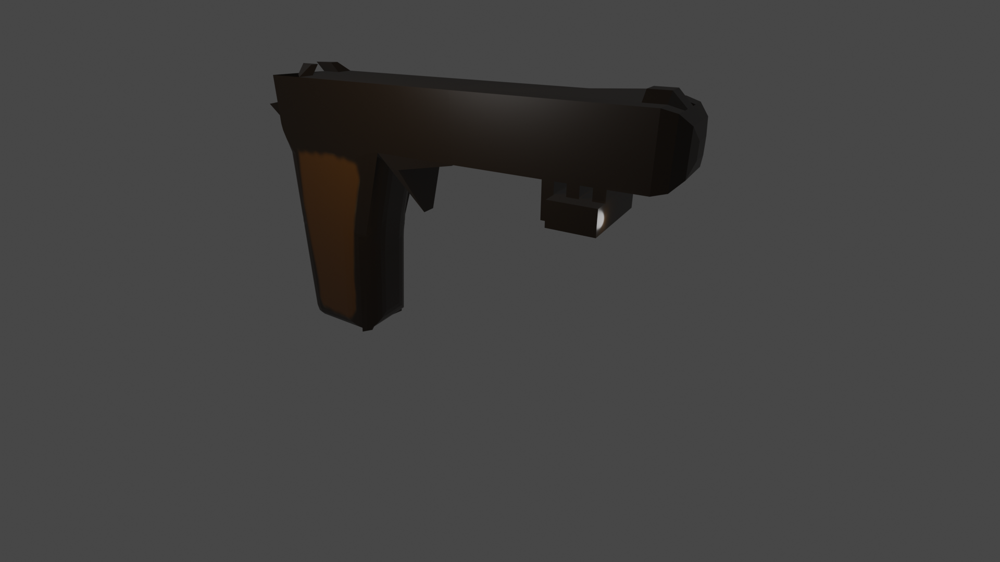
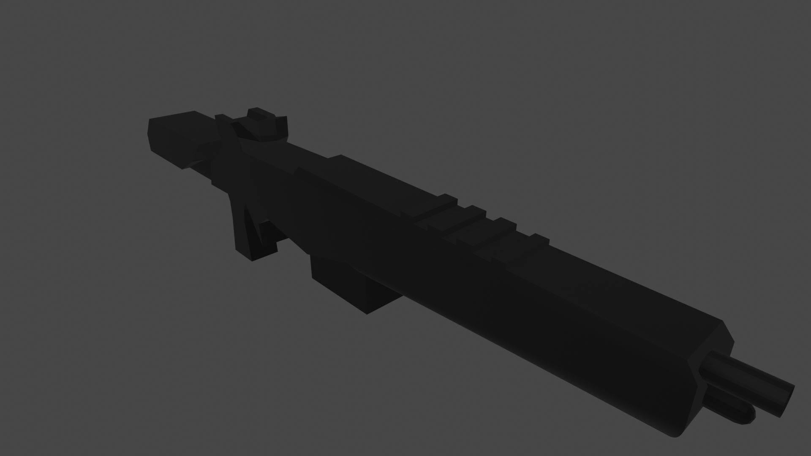

 M1911 — самозарядный пистолет под патрон .45 ACP. Разработан Джоном Мозесом Браунингом в 1908 году (U.S. Patent 984519, 14 февраля 1911 года). Пистолет находился на вооружении лиц офицерского и сержантского состава всех видов вооружённых сил, родов войск и служб ВС США с 1911 по 1985 год, разрешён к использованию военными и полицейскими служащими в качестве личного оружия и в настоящее время. P.S. Не является реальной моделью оружия
 M1A — коммерческий самозарядный вариант производства «Springfield Armory», со стандартными деревянными ложей, прикладом и ствольной накладкой, производство которого началось в конце 1971 года; комплектуется магазинами на 5, 10 или 20 патронов. P.S. Не является реальной моделью оружия